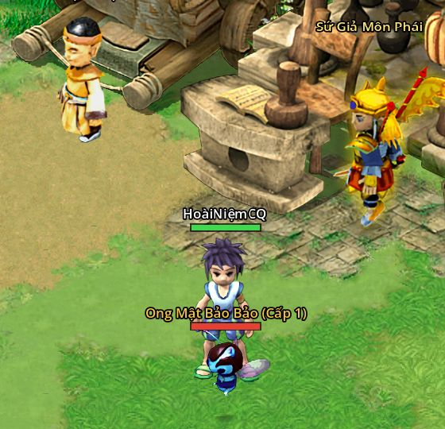

Bắt thú bằng Dây Càn Khôn
- Bản 5.0
- Dây 2.000 lượng ở Tiệm Tạp Hóa
- Quái thường ngoài bản đồ

- Mua Dây Càn Khôn ở Tiệm Tạp Hóa (Tân Thủ Thôn, Tề, Tần, Sở, Chu), 2.000 lượng một sợi, chồng 999.
- Ném dây: dùng kĩ năng cơ bản Bắt Bảo Thú (Alt+R, tab Kĩ năng cơ bản), hoặc dùng Dây trong hành trang; từ bản 5.2 kéo cả Dây xuống ô phím được.
- Bản 5.2 Đang chọn sẵn một quái thì bấm ô là ném ngay vào con đó. Chưa chọn thì con trỏ thành bàn tay: bấm trái hoặc chuột phải vào quái để ném; bấm ra đất, ESC hay bấm lại ô thì thôi, không mất dây.
- Chỉ bắt được quái thường ngoài bản đồ: không boss, không quái phó bản, Phong Yêu Kính, Trộm Bảo, Tống Bảo, phản đồ. Cấp quái không quá cấp bạn cộng 5, đứng trong 7 ô.
- Mỗi lần ném mất 1 dây, trúng hay trượt đều mất. Khung chat báo mọi lần ném: trúng, trượt (kèm tỉ lệ bắt lúc đó và số dây còn) hay vì sao không ném được (hết dây, quá xa, quái cao quá 5 cấp).
Tỉ lệ bắt
30 % cộng một nửa phần máu quái đã mất. Đánh quái gần chết rồi hãy ném.
| Máu quái còn | Tỉ lệ |
|---|---|
| Đầy máu | 30 % |
| 50 % | 55 % |
| 20 % | 70 % |
| 10 % | 75 % |
- Trúng: quái biến mất và vào sổ. Không có kinh nghiệm, không rơi đồ, không tính nhiệm vụ.
- Trượt: mất 1 dây, quái nổi giận đánh bạn.
Bảo Bảo
- Mỗi lần bắt được có 1 % ra bản Bảo Bảo (ô viền vàng trong sổ, thú mạnh hơn).
- Mỗi bản đồ có quái thường còn có một con "... Bảo Bảo" tên vàng. Ném dây vào nó chắc chắn được Bảo Bảo. Bị bắt hay bị hạ thì 1 giờ sau mới có con mới.